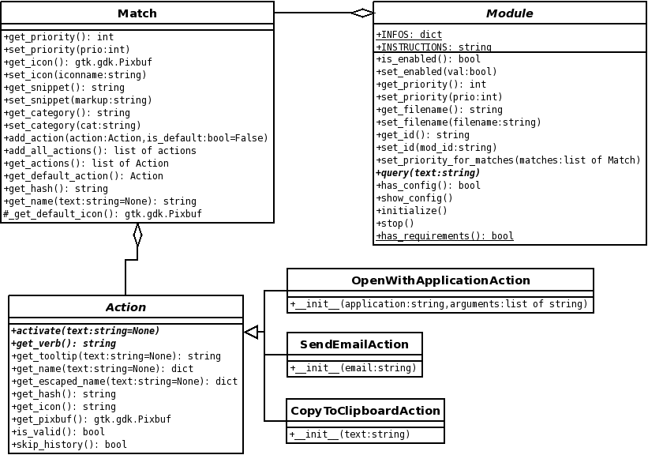

class Module(gobject.GObject): INFOS = {'icon': '', 'name': '', 'description': '', 'version': '1.0.0.0', 'categories': {}} INSTRUCTIONS = "" def __init__(self): super(Module, self).__init__() self._priority = 0 self._enabled = False self._filename = None self._id = "" def _emit_query_ready (self, query, matches): self.emit ("query-ready", query, matches) return False def is_enabled(self): return self._enabled def set_enabled(self, val): self._enabled = val def get_priority(self): return self._priority def set_priority(self, prio): self._priority = prio def get_filename(self): return self._filename def set_filename(self, filename): self._filename = filename def get_id(self): return self._id def set_id(self, mod_id): self._id = mod_id def set_priority_for_matches(self, matches): for m in matches: m.set_priority( self.get_priority( )) def query(self, text): raise NotImplementedError def has_config(self): return False def show_config(self, parent): pass def initialize(self): pass def stop(self): pass @staticmethod def has_requirements(): return True

Module
Here's how the new interface looks like.
As you can see there are two attributes at the top.
-
INFOS: A dictionary containing information about the module. The mandatory keys are
-
icon: A gtk.gdk.Pixbuf representing the module's icon
-
name: The name of the module
-
description: A short description of the module
-
version: The module's version
-
(optional) categories: You can add a dictionary here to add custom categories. Each key is the identifier of the category and the value another dictionary of the form {"name": "My category's name"}.
-
-
INSTRUCTIONS: Information stored here will be displayed in the preferences dialog if you select the module. You can store error messages (e.g. about missing dependencies) here, too.
You can override the following methods in your sub-class:
-
query: This method will be called to start the module's search mechanism.
-
(optional) has_config: If your module comes with a configuration dialog override this method and return True.
-
(optional) show_config: This method should contain everything to create an optional configuration dialog and display it.
-
(optional) initialize: This method will be called if Deskbar is starting up. If you have to do some time-consuming stuff at startup (e.g. indexing) do this here.
-
(optional) stop: Any cleaning up should happen in here.
-
(optional) has_requirements: Override this method if your module depends on additional tools or applications. You can check for them in this method and return the appropriate value.
|
|
If you want to override has_requirements you must make it static in your sub-class as well. |
The following methods are needed by Deskbar core. Do not override them.
-
_emit_query_ready: Call this method if you collected your search results and want the world to know about it.
-
is_enabled and set_enabled: Getter and setter for the module's status.
-
(get|set)_priority: Get or set the module's priority.
-
(get|set)_filename: Get or set the complete path of the file that contains this module
-
(get|set)_id: Get or set the module's id. The id in this case is the filename.
Match
Let's take a look on the new Match interface. Unless in previous versions this class isn't responsible for "doing" the action anymore. It just supplies actions.
class Match: def __init__(self, **args): self._name = "" self._icon = None self._pixbuf = None self._category = "default" self._priority = 0 self._actions = [] self._default_action = None self._snippet = None self.__actions_hashes = set() if "name" in args: self._name = args["name"] if "icon" in args and args["icon"] != None: self.set_icon(args["icon"]) if "pixbuf" in args and args["pixbuf"] != None: if not isinstance(args["pixbuf"], gtk.gdk.Pixbuf): raise TypeError, "pixbuf must be a gtk.gdk.Pixbuf" self._pixbuf = args["pixbuf"] if "category" in args: self._category = args["category"] if "priority" in args: self._priority = args["priority"] def _get_default_icon(self): if CATEGORIES[self.get_category()].has_key("icon"): return CATEGORIES[self.get_category()]["icon"] else: return CATEGORIES["default"]["icon"] def get_priority(self): return self._priority def set_priority(self, prio): self._priority = prio def get_icon(self): if self._pixbuf != None: # Only for Matches that won't be stored in history return self._pixbuf elif self._icon != None: return deskbar.core.Utils.load_icon(self._icon) else: return self._get_default_icon() def set_icon(self, iconname): if not isinstance(iconname, str): raise TypeError, "icon must be a string" self._icon = iconname def get_snippet(self): return self._snippet def set_snippet(self, snippet): self._snippet = snippet def get_category(self): return self._category def set_category(self, cat): self._category = cat def get_actions(self): return self._actions def get_default_action(self): return self._default_action def add_action(self, action, is_default=False): if not action.get_hash() in self.__actions_hashes: self.__actions_hashes.add(action.get_hash()) self._actions.append(action) if is_default: self._default_action = action def add_all_actions(self, actions): for action in actions: self.add_action(action) def get_hash(self): return None def get_name(self, text=None): return self._name
You can pass various parameters to the constructor and it will set the proper values.
-
name: The query string. This value is mandatory.
-
icon: The name or path of an icon. It's very important that you don't try to store something else in it. If you don't set a icon a default icon according to the match's category is displayed.
-
pixbuf: If you fetch the match's icon on the fly you can provide a pixbuf as well and it overrides the value of icon.
-
category: The category the match belongs to.
-
priority: Match's priority. It's recommended that you use your module's set_priority_for_matches method to assign your matches the priority of your module.
If you create your own match class you can override the following methods:
-
get_hash: Returns a hash that identifies the result. You have to return a hashable object (a string is the best choice). If two matches have they same hash the will be merged, i.e. the actions of the second match will be added to the first match and the second match will be discarded.
-
get_name: Returns a string used to present a special match in the results. If more than one action is available the value returned by get_name will be displayed in the results.
Important getter and setter methods:
-
add_action: Adds a action to the match. If the parameter is_default is set to True the action is marked as default. If you don't supply a default action the first one that has been added is treated as such.
-
add_all_actions: Calls add_action for each item in the supplied list.
-
get_actions: Returns a list of actions.
-
get_default_action: Returns the default action, if available, or None.
-
set_snippet: You can supply markup that will displayed in a new line under the Matche's get_verb value. This method is available since 2.24.
|
|
You should forbear from using the attributes that start with _ directly in your sub-class. Always use either the appropriate Getter/Setter or provide the value when creating the class. |
Action
This class is entirely new. It is responsible for executing the action.
class Action: def __init__(self, name): self._name = name def get_escaped_name(self, text=None): # Escape the query now for display name_dict = {"text" : cgi.escape(text)} for key, value in self.get_name(text).items(): name_dict[key] = cgi.escape(value) return name_dict def get_hash(self): return self._name def get_icon(self): return None def get_pixbuf(self): if self.get_icon() != None: return load_icon(self.get_icon()) return None def activate(self, text=None): raise NotImplementedError def get_verb(self): raise NotImplementedError def get_tooltip(self, text=None): return None def get_name(self, text=None): return {"name": self._name} def is_valid(self): return True def skip_history(self): return False
As you can see the constructor expects a name parameter. This parameter should describe the object the action works with. E.g. if the action opens files, name should be the filename of the file that will be opened, if the action gets executed.
To implement your own action you have to implement the following methods:
-
activate: This method will be called if the user activated the match.
-
get_verb: A string containing one or more %(name)s that will be replaced by the match's get_name method (e.g. Execute %(prog)s). The name between the paranthesis must be a key of the dictionary returned by get_name. You can always make use of %(text)s. It will be replaced by the query string.
In addition, you can override the following methods:
-
get_hash: Returns a hash that identifies the action. You have to return a hashable object (a string is the best choice). If two actions have the same hash only the first one will be added.
-
get_icon: Returns the name of the icon displayed beside the action.
-
get_name: Returns a dictionary whose entries will be used in the action string returned by get_verb. Do not escape the strings as they will be escaped automatically.
-
is_valid: Whether the action is still valid. E.g. if the action opens a file and it has been deleted, this method should return False.
-
skip_history: Whether the action should be stored in history.
-
get_snippet: Returns the tooltip markup string associated to this action. Override this method to display a tooltip when the user hovers over the match (the default action's tooltip is displayed) or over an action in the list of additional actions. This method is available since 2.24.
Despite writing your own action you can make use of the basic actions shipped with Deskbar-Applet. The actions are located in the deskbar.handlers.actions module. It contains the actions
-
CopyToClipboardAction
-
GoToLocationAction
-
OpenDesktopFileAction
-
OpenFileAction
-
OpenWithApplicationAction
-
OpenWithNautilusAction
-
SendEmailToAction
-
SendFileViaEmailAction
-
ShowUrlAction
If you want to know how the actions work have a look at the sources.
Another way suited especially for files is the deskbar.handlers.actions.ActionsFactory.get_actions_for_uri function. You provide an unescaped URI or path of a file and it will return a list of actions depending on the file's MIME-type. An empty list will be returned if an error occured during the retrival of the MIME-type (e.g. file doesn't exist). Run Deskbar-Applet on the command line with the -w option to see debug information.
|
|
The list returned by get_actions_for_uri does not include a action for the default/preferred application. Use the OpenFileAction class for that and add it as default action to the match. |
Categories
Here's a list of categories you can use. If your favorite category is missing you can add your own with the categories key of your module's INFO attribute. The icon is the default icon for each category. The icon may vary depending on the icon theme you use.
-
default
-
history
-
documents
-
emails
-
conversations
-
files

-
people
-
places
-
actions
-
web
-
websearch
-
news
-
notes